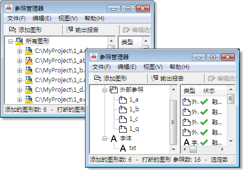

参照管理器左侧窗格中的树状图提供了用户添加到树状图列表中的图形中参照的层次列表。用户可以控制树状图的显示样式，并且可以单击加号 (+) 或减号 (-) 以展开或收拢树状图中称为节点的项目。
树状图有两种组织类型：“按图形列表”和“按参照类型列表”。“按图形列表”显示按图形文件组织的节点的层次列表。“按参照类型列表”显示根据各种类型的参照组织的节点的层次列表。

可以展开和折叠树状图中的节点，以列出其中包含的参照。从树状图中选择的内容决定“参照”列表中显示的内容：
用户可以从树状图列表中选择并删除任何图形，包括样板图形 (.dwt) 和标准图形 (.dws) 以及常规 AutoCAD 图形 (.dwg)。
对于带有嵌套外部参照的图形而言，树状图还具备其他几个功能。
使用参照管理器的树状图中的图标，用户可以查找包含无法定位其路径的外部参照的图形。在某些复杂的情况中，路径不正确的外部参照可能不在“参照”列表中列出，但可能在树状图中列出。
参照管理器提供了一个选项，可以在将图形添加至树状图时自动添加所有图形的嵌套外部参照。如果需要编辑嵌套外部参照的路径，使用此选项可以节省时间。
当图形中嵌套外部参照覆盖时，参照管理器可以模拟 AutoCAD 的显示行为。外部参照覆盖中嵌套的任何外部参照的列出方式与 AutoCAD 显示它们的方式相同。如果外部参照覆盖在 AutoCAD 图形中的嵌套深度超过一层，附着到外部参照覆盖的任何外部参照将不会在参照管理器树状图中列出。


 全部展开
全部展开